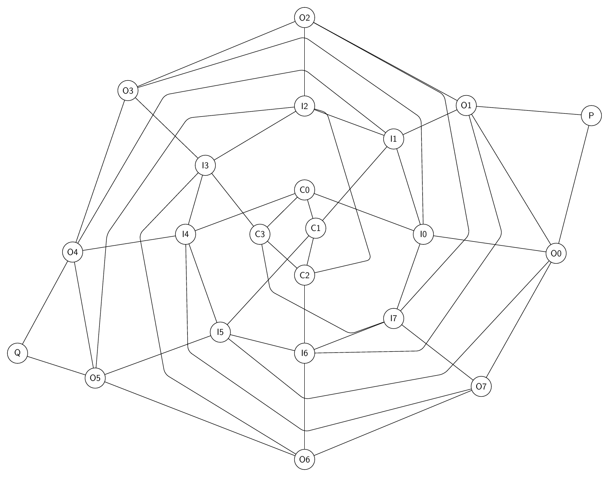
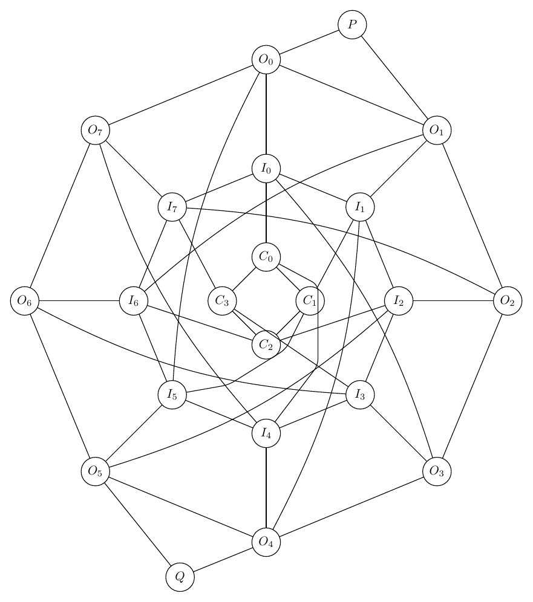

This report compares the full iterative workflow against a single-prompt LLM baseline.
| Case | Workflow Score | Single Score | Delta | Workflow Success | Single Success | Workflow Iters | Workflow Area/Node | Single Area/Node |
|---|---|---|---|---|---|---|---|---|
| Nested Ring Switchboard | 6.50 | 4.20 | 2.30 | False | False | 4 | 17.92 | 9.51 |
Prompt: Draw a complex artificial undirected graph called a nested ring switchboard. Create an outer 8-cycle O0-O1-O2-O3-O4-O5-O6-O7-O0 and an inner 8-cycle I0-I1-I2-I3-I4-I5-I6-I7-I0. Add spokes Oi-Ii for every i. Add shifted inner-to-outer chords I0-O3, I1-O4, I2-O5, I3-O6, I4-O7, I5-O0, I6-O1, I7-O2. Add four controller nodes C0,C1,C2,C3 placed as a small central diamond with cycle C0-C1-C2-C3-C0. Connect C0 to I0 and I4, C1 to I1 and I5, C2 to I2 and I6, and C3 to I3 and I7. Add two port nodes P and Q connected to O0,O1 and O4,O5 respectively. Make the nested structure symmetric, readable, and not overly spread out.
score: 6.50; success: False; area/node: 17.92

score: 4.20; success: False; area/node: 9.51
